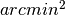

Functions to do Astronomy related unit conversions.
| requires: | NumPy |
|---|---|
| requires: | cosmocalc (http://cxc.harvard.edu/contrib/cosmocalc/) |
| version: | 0.2 |
| author: | Sami Niemi |
| contact: | sniemi@unc.edu |
Functions
| ABMagnitudeToJansky(ABmagnitude) | Converts AB magnitudes to Janskys. |
| Luminosity(abs_mag) | Converts AB magnitudes to luminosities in |
| RAandDECfromStandardCoordinates(data) | Converts Standard Coordinates on tangent plane to RA and DEC on the sky. |
| angstromToHertz(A) | Converts Angstroms to Hertz. |
| angularDiameterDistance(z[, H0, WM]) | The angular diameter distance DA is defined as the ratio of |
| arccot(x) | |
| arcminSquaredToSolidAnge(arcmin2) | Converts  to solid angle. |
| arcminSquaredToSteradians(arcmin2) | Converts to steradians. |
| comovingVolume(arcmin2, zmin, zmax[, H0, WM]) | Calculates the comoving volume between two redshifts when the sky survey has covered region. |
| convertSphericalToCartesian(r, theta, phi) | Converts Spherical coordinates to Cartesian ones. |
| cosmocalc(z[, H0, WM, WV]) | Calculate useful values for the supplied cosmology. |
| cot(x) | |
| degTodms(ideg) | Converts degrees to degrees:minutes:seconds |
| degTohms(ideg) | Converts degrees to hours:minutes:seconds |
| get_flat_flambda_dmag(plambda, plambda_ref) | Compute the differential AB-mag for an object flat in f_lambda. |
| get_magAB_from_flambda(flambda, wlength) | Converts a mag_AB value at a wavelength to f_lambda. |
| janskyToMagnitude(jansky) | Converts Janskys to AB magnitudes. |
| nanomaggiesToJansky(nanomaggie) | Converts nanomaggies, used for example in SDSS imaging, to Janskys. |
| redshiftFromScale(scale) | Converts a scale factor to redshift. |
| scaleFromRedshift(redshift) | Converts a redshift to a scale factor. |